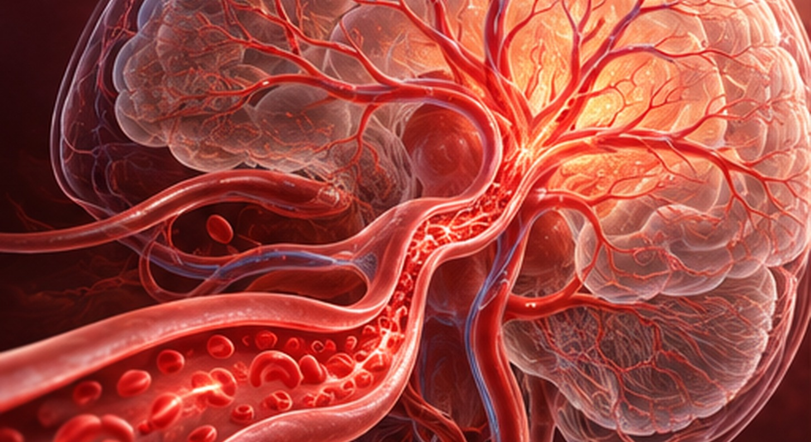
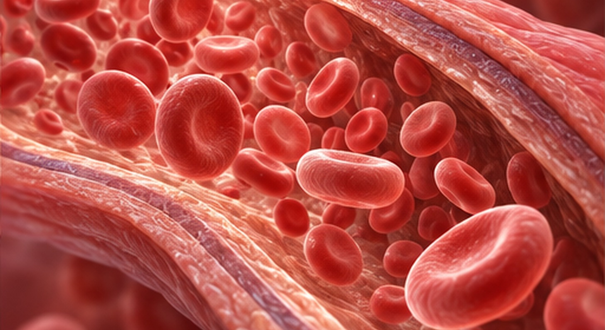
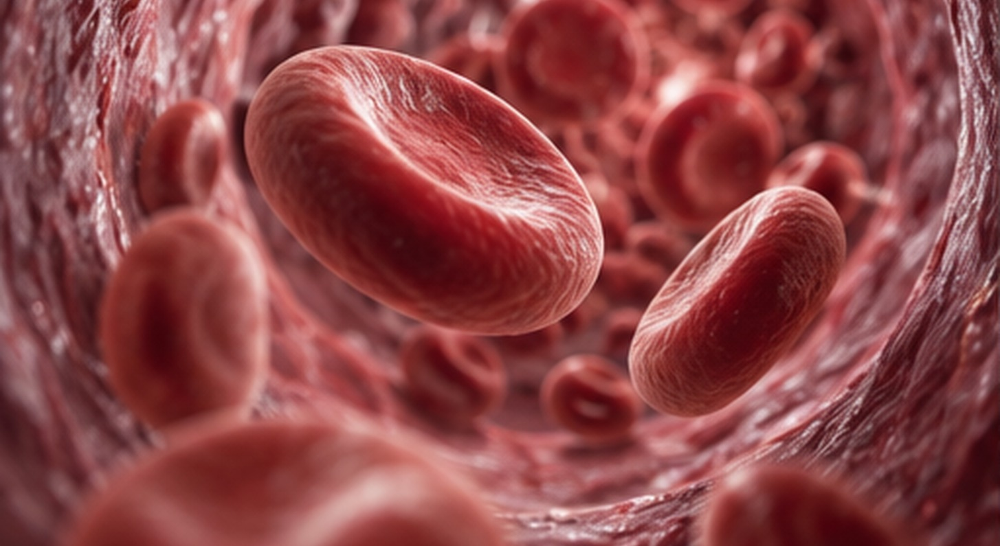
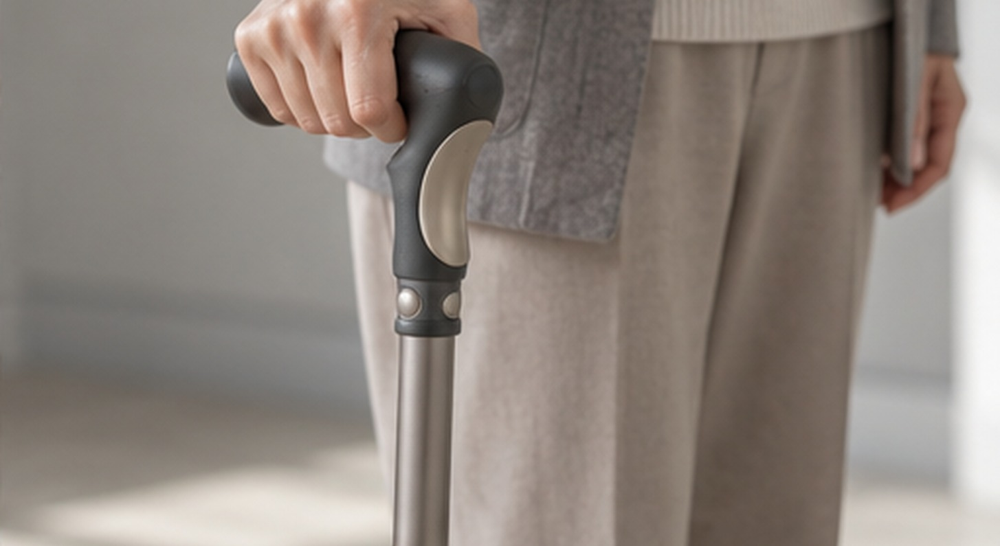
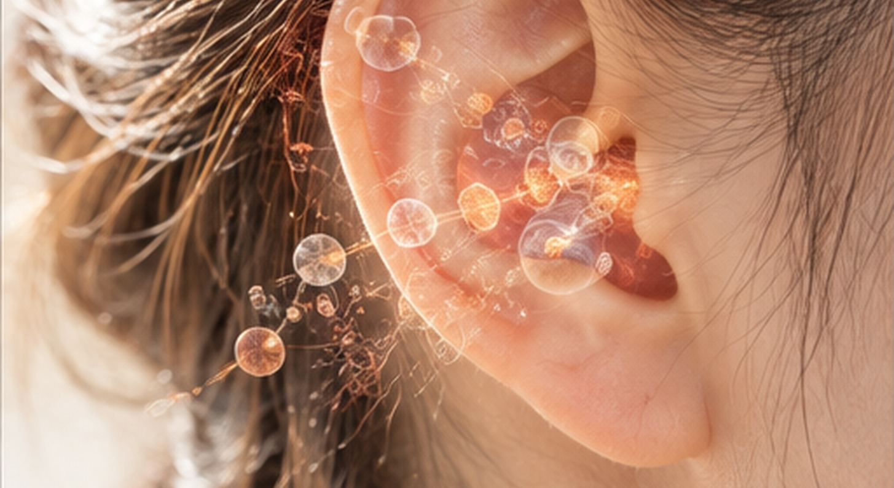
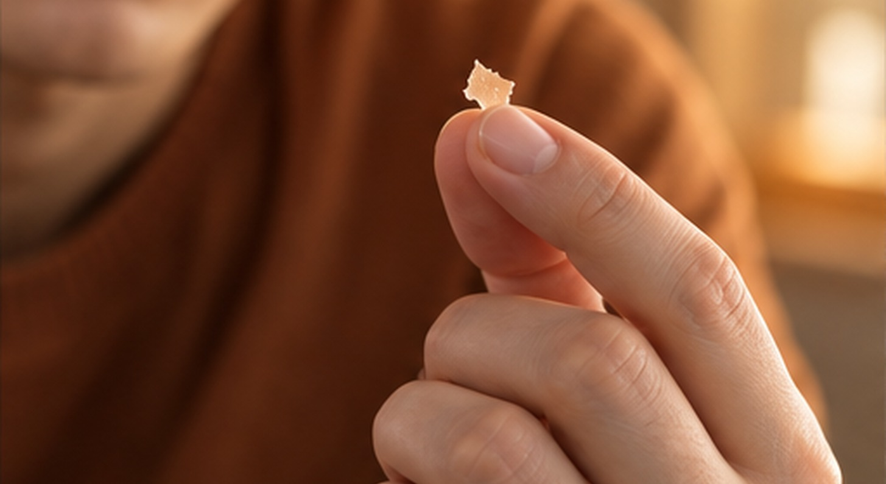
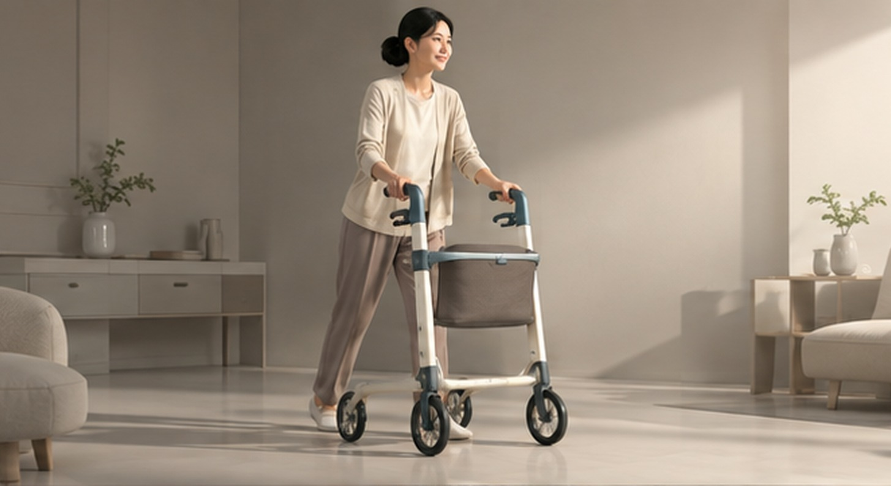
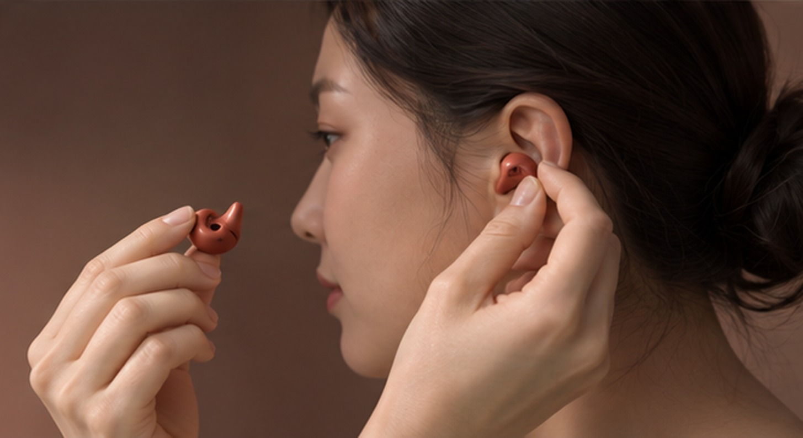

대표적인 뇌&혈관질환
제때 치료하는 것이 중요한 뇌 질환은 목숨을 위협하거나 일상생활을 크게 흔들 수 있는 병입니다.
작은 신호도 그냥 넘기지 말고, 정기적으로 건강을 살펴 뇌를 지켜 주시기 바랍니다.
뇌&혈관질환 원인
뇌는 우리 몸이 하는 모든 일을 맡아 다스리는 아주 중요한 기관입니다.
여러 가지 원인으로 뇌에 병이 생길 수 있고, 그렇게 되면 건강은 물론 하루하루의 생활까지 크게 흔들릴 수 있습니다.

유전적 요인
비만 평소 이런 증상이 있다면
뇌&혈관질환을 의심해봐야 합니다.
뇌졸중
뇌혈관이 막히거나(허혈성 뇌졸중/뇌경색) 터져서(출혈성 뇌졸중/뇌출혈) 뇌에 피가 돌지 못하게 되는 병으로, 바로 치료해야 합니다.
뇌세포에 산소와 영양이 끊기면 신경 세포가 다쳐 몸이 마비되거나 말이 어눌해지고 눈이 잘 안 보이는 등 심각한 증상이 나타납니다.
뇌졸중은 우리나라 사람들이 많이 목숨을 잃는 병 가운데 하나이며, 얼마나 일찍 진단하고 치료하느냐가 후유증과 생존을 가릅니다.

뇌졸중의 주요증상을
확인해 보세요.
동맥경화
혈관 벽 안쪽에 플라크(plaque)가 끼면서 혈관이 좁고 단단해지는 것을 동맥경화라 하며, 심장병과 뇌혈관 질환을 부르는 큰 원인입니다.
고혈압과 당뇨, 고지혈증이 주요 위험 요인이므로 일찍 진단하고 미리 막는 것이 좋습니다.

동맥경화의 주요증상을
확인해 보세요.
뇌동맥류
혈관 벽이 약해진 곳이 꽈리처럼 부풀어 오른 것을 뇌동맥류라 하는데,
처음에는 증상이 없지만 터지면 지주막하출혈이 되어 목숨을 위협할 수 있는 위험한 질환입니다.

뇌동맥류의 주요증상을
확인해 보세요.
치매
뇌의 신경세포가 다치면서 기억력과 언어 능력, 생각하고 판단하는 힘 같은 인지 기능이 계속 떨어지는 질환입니다.
일상생활에 큰 지장을 주며 알츠하이머병과 혈관성 치매가 주된 원인인데, 일찍 찾아내 알맞게 관리하면 진행을 늦추고 생활을 한결 편하게 할 수 있습니다.
치매의 주요증상을
확인해 보세요.
파킨슨병
뇌에서 도파민을 만드는 신경 세포가 조금씩 사라지면서 떨림, 느린 동작, 근육 굳음 같은 운동 이상과 함께 소화 문제, 수면 장애, 자율신경 이상 같은 여러 비운동 증상이 나타나는 퇴행성 신경 질환입니다.
대부분 60세가 넘어 생기지만, 40대 이전에 일찍 시작되는 환자도 있습니다.

파킨슨병의 주요증상을
확인해 보세요.
뇌전증(간질)
뇌에서 전기 신호가 잘못 전달되어 비정상적인 전기 신호가 되풀이해 생기는 오래가는 신경 질환입니다.
이런 이상 신호는 뇌의 한 부분에서 시작되기도 하고 뇌 전체로 퍼지기도 하며, 발작이라는 모습으로 나타납니다.
발작 증상은 사람마다 다르며, 정신을 잃거나 경련을 하고 감각이 이상해지거나 행동이 바뀌는 등 여러 가지가 있습니다.
뇌전증(간질)의 주요증상을
확인해 보세요.
안면마비
얼굴 근육을 움직이는 안면신경이 다치거나 기능이 떨어지면서 얼굴 한쪽이 움직이지 않거나 좌우가 달라지는 상태입니다.
바이러스 감염이나 외상, 뇌졸중 같은 것이 주된 원인이며, 대부분은 일찍 치료하고 알맞게 재활하면 증상이 나아질 수 있습니다.

안면마비의 주요증상을
확인해 보세요.
삼차신경통
삼차신경이 예민해지거나 다쳐서 생기는 오래가는 통증 질환으로, 얼굴 한쪽에 몹시 심한 통증이 주기적으로 찾아오는 것이 특징입니다.
삼차신경을 혈관이 누르는 것이 가장 흔한 원인이고, 다발성경화증이나 뇌종양 같은 병도 원인이 될 수 있습니다.
삼차신경통의 주요증상을
확인해 보세요.
말초신경병
말초신경이 다치거나 제대로 작동하지 않아서 움직임과 감각, 자율신경 기능에 문제가 생기는 질환입니다.
당뇨병과 영양 부족, 독소에 노출된 것, 자가면역질환과 외상 등이 주된 원인이며, 다친 신경의 종류와 범위에 따라 증상이 여러 가지로 나타납니다.

말초신경병의 주요증상을
확인해 보세요.
두통
누구나 흔히 겪는 증상이지만, 가벼운 긴장성 두통부터 심각한 병을 알리는 신호까지 원인이 아주 여러 가지입니다.
두통은 왜 생겼는지에 따라 일차성과 이차성 두 갈래로 나뉩니다.
일차성 두통은 따로 원인이 되는 병 없이 생기는 두통으로, 편두통과 긴장성 두통 등이 여기에 속합니다.
이차성 두통은 뇌종양이나 뇌혈관질환, 뇌염처럼 분명한 병 때문에 생기는 두통을 말합니다.
두통의 주요증상을
확인해 보세요.
어지럼증
내 몸이나 주변이 빙글빙글 도는 것 같거나, 균형을 잃고 흔들리는 듯한 느낌을 말합니다. 몸의 균형을 잡아 주는 속귀(전정기관)나 뇌, 눈과 말초 신경 같은 곳에 이상이 생기면 나타납니다.
어지럼증이 자꾸 되풀이되거나 오래간다면 전정신경염이나 뇌졸중, 저혈압처럼 여러 원인 때문일 수 있으니 정확한 원인을 찾아 알맞게 치료받으셔야 합니다.
어지럼증의 주요증상을
확인해 보세요.
건망증
기억을 담아 두거나 꺼내는 힘이 떨어진 상태로, 스트레스나 피로, 나이 같은 잠깐의 원인부터 치매와 경도인지장애, 뇌졸중의 초기 증상까지 여러 원인으로 생길 수 있습니다.
건망증이 일상생활에 지장을 줄 만큼 심하다면 일찍 검사받고 치료를 시작하셔야 합니다.
건망증의 주요증상을
확인해 보세요.
손발저림
손이나 발의 감각이 둔해지거나 바늘로 찌르는 것 같은 이상한 느낌이 드는 증상으로, 주로 신경이 다쳤거나 피가 잘 돌지 않아서 생깁니다.
말초신경병증이나 척추 질환, 당뇨병과 비타민 부족, 혈관 질환 같은 것이 주된 원인이며, 원인에 따라 증상이 조금씩 다르게 나타납니다.
손발저림의 주요증상을
확인해 보세요.
보행장애
걷는 동작에 이상이 생겨 걷는 속도나 균형, 박자와 안정감이 예전 같지 않은 상태를 말합니다.
뇌와 척수, 말초신경 같은 신경계나 근골격계, 자율신경계에 이상이 생겨 나타나며, 원인에 따라 가벼운 불편부터 심각한 장애까지 여러 가지로 나타날 수 있습니다.

보행장애의 주요증상을
확인해 보세요.
불면증
잘 수 있는 시간이 충분한데도 잠이 들기 어렵거나, 자다가 자주 깨거나, 필요한 만큼 자지 못하는 상태를 말하며, 그 때문에 낮 동안의 생활에까지 지장이 생깁니다.
원인에 따라 일차성과 이차성으로 나누고, 얼마나 오래됐는지에 따라 단기(며칠~몇 주)와 만성(3개월 이상)으로 나누기도 합니다.
불면증의 주요증상을
확인해 보세요.
수전증
나도 모르게 손이 일정한 박자로 떨리는 증상으로, 신경계 이상으로 생길 수 있으며 본태성 수전증이 가장 흔합니다.
스트레스나 피로, 카페인 때문에 더 심해질 수 있고, 파킨슨병 같은 병이 원인이라면 다른 신경 증상이 함께 나타날 수 있습니다.
수전증의 주요증상을
확인해 보세요.
이명
밖에서 아무 소리가 나지 않는데도 귀에서 윙윙, 삐 소리, 바람 소리 같은 잡음이 들리는 상태를 말합니다.
이명은 난청이나 중이염 같은 귀 질환, 큰 소음이나 스트레스, 혈관 이상, 약 부작용처럼 여러 가지 원인으로 생길 수 있습니다.
가벼운 증상은 대개 시간이 지나면서 나아지지만, 증상이 계속되거나 일상생활에 지장을 줄 만큼 심하다면 정확히 진단받고 치료를 받으셔야 합니다.

이명의 주요증상을
확인해 보세요.